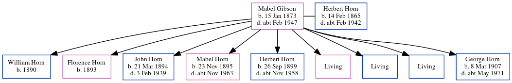

George Francis Horn 1907 - c1971
[ Home ] | [ Calendar ] | [ Surnames Index ] | [ Errors ] | [ Family History ]A general heavy worker foreman and the child of Herbert Horn (a carter) and Mabel Gibson, George Horn, the second cousin twice-removed on the father's side of Nigel Horne, was born in Margate, Kent, England on 8 Mar 19071.
During his life, he was living at 84 Byron Road in Margate on 2 Apr 19115 - less than a mile from his first cousin once-removed on his father's side Isaac Horne who was living at 23 Victoria Avenue, Northdown in Margate; at Iona, Nash Road in Margate on 29 Sept 19391 (when he was living with his) - less than a mile from his mother Mabel Gibson who was living at 109 Nash Road in Margate; at 7 Poet's Corner in Margate in 19594; and at 128 Byron Avenue in Margate in 19653. He served in the army from 1924 to 1928 (regiment: The Royal Regiment Of Artillery; Service number: 754784).
He died c. May 1971 in Thanet, Kent, England2.
Parents
- Herbert James was born on 14 Feb 1865
- Mabel Ellen was born on 15 Jan 1873
Citations
- 1939 Register - Findmypast (was the head of the household)
- England & Wales deaths 1837-2007 - Findmypast
- 1965 Kelly's Thanet Directory
- 1959 Kelly's Thanet Directory
- 1911 Census for England & Wales - Findmypast (was age 4 and the son of the head of the household)
Media
Thanet Advertiser 13 Apr 1928

1965 Kelly's Thanet Directory

1959 Kelly's Thanet Directory

George Francis Horne

1939 Register - TNA/R39/1752/1752G/010/06
1939 Register - TNA/R39/1752/1752G/010/08
1911 Census for England & Wales - GBC/1911/RG14/04491/0861/8
England & Wales deaths 1837-2007 - BMD/D/1971/2/AZ/000554/123
England & Wales births 1837-2006 - BMD/B/1907/2/AZ/000300/068
Royal Artillery attestations 1883-1942 - GBM/ROYALART/286304
World War 2 Allies Collection - WW2/03322152
Family Tree
Map
Generated by ged2site. Last updated on Jul 3, 2024
Known Issues
Location for the event between 1924 and 1928 is empty